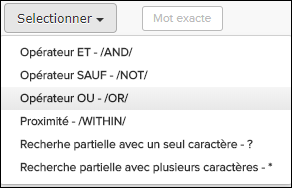
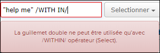

Pour de nombreux types de publication, le Pinpoint offrent des opérateurs de recherche et caractères génériques dans un bouton Selectionner à côté du champ de recherche en texte intégral:

Ces options aident l'utilisateur à insérer correctement et utiliser des opérateurs de recherche et des caractères génériques dans le champ de recherche. Si la syntaxe de recherche n'est pas correcte, cela sera indiqué par une ligne en rouge autour du champ de recherche et une info-bulle expliquant le problème. Dans l'exemple ci-dessous, un numéro est manquant à la droite de / dans / opérateur.

| Opérateur/Caractères génériques | Description | Exemple |
|---|---|---|
| AND Opérateur - /AND/ | Utilisez le /AND/ dans une requête de recherche pour connecter deux expressions que vous voulez trouver dans un document. |
apple /AND/ pear trouvera des documents qui contiennent à la fois "apple" et "pear" |
| NOT Opérateur - /NOT/ | Utilisez /NOT/ devant toute expression de recherche pour inverser le sens. Cela vous permet d'exclure les documents d'une recherche. |
apple /NOT/ pear trouvera des documents qui contiennent "apple" et pas "pear" |
| OR Opérateur - /OR/ | Utilisez /OR/ dans une requête de recherche pour connecter deux expressions, dont au moins une vous voulez trouver dans un document. | apple /OR/ pear trouvera des documents avec "apple" ou "pear" |
| Proximité - /WITHIN/ | Utilisez /WITHIN/ pour trouver les mots qui se trouvent à une distance spécifique les uns des autres. |
"matériaux énergétiques"/WITH IN/4 trouveront des documents qui ont "énergétiques" et "matériaux" à 4 mots l'un de l'autre |
| Un seul caractère générique - ? | Utilisez le ? pour rechercher des termes qui correspondent au caractère unique remplacé. |
te?t trouveront à la foi "test" et "text" |
| Multiple caractère générique- * | Utilisez * pour rechercher 0 ou plusieurs caractères. Vous pouvez également utiliser les recherches génériques au milieu d'un terme |
tester* trouveront "test", "tests" ou "tester" |